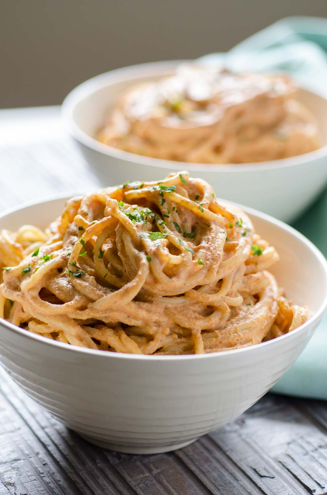

Vegan Creamy Chipotle

Description
I am obsessed with this creamy chipotle pasta. The sauce is so easy to make and pretty amazing when you realize
that a couple of almonds can make a beautiful cream sauce. The smokiness of the chipotle and the acidity of the
lemon juice make it irresistible.
Ingredients
- ½ cup Almonds, whole, raw
- ¼ cup Almond milk, unsweetened (or vegetable oil)
- 1 Chipotle pepper in Adobo, (only one of the peppers in the can)
- 1 clove Garlic
- ¾ cup Water
- ½ cup Tomato, fire roasted, canned
- 1 tbsp. Lemon juice, fresh
- ½ lb. Spaghetti, whole wheat
- 1 tbsp. Cilantro chopped
Steps
- Place the almonds, almond milk, water, chipotle, garlic clove, roasted tomato, and lemon juice in a blender
and process until smooth. Season with salt and pepper.
- Boil pasta according to the instructions on the box. Drain and place in a large bowl.
- Pour chipotle sauce over pasta and mix well.
- Serve with chopped cilantro on top.